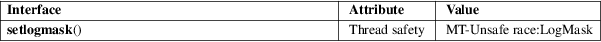

setlogmask − set log priority mask
Standard C library (libc, −lc)
#include <syslog.h>
int setlogmask(int mask);
A process has a log priority mask that determines which calls to syslog(3) may be logged. All other calls will be ignored. Logging is enabled for the priorities that have the corresponding bit set in mask. The initial mask is such that logging is enabled for all priorities.
The setlogmask() function sets this logmask for the calling process, and returns the previous mask. If the mask argument is 0, the current logmask is not modified.
The eight priorities are LOG_EMERG, LOG_ALERT, LOG_CRIT, LOG_ERR, LOG_WARNING, LOG_NOTICE, LOG_INFO, and LOG_DEBUG. The bit corresponding to a priority p is LOG_MASK(p). Some systems also provide a macro LOG_UPTO(p) for the mask of all priorities in the above list up to and including p.
This function returns the previous log priority mask.
None.
For an explanation of the terms used in this section, see attributes(7).

POSIX.1-2008.
POSIX.1-2001.
LOG_UPTO() will be included in the next release of the POSIX specification (Issue 8).
closelog(3), openlog(3), syslog(3)